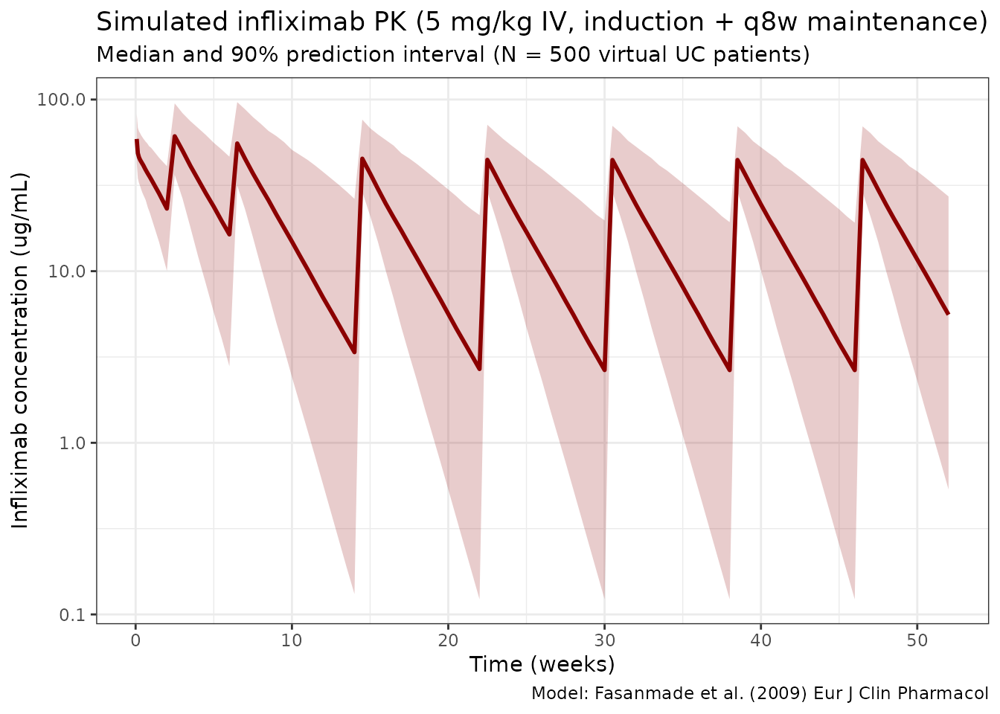
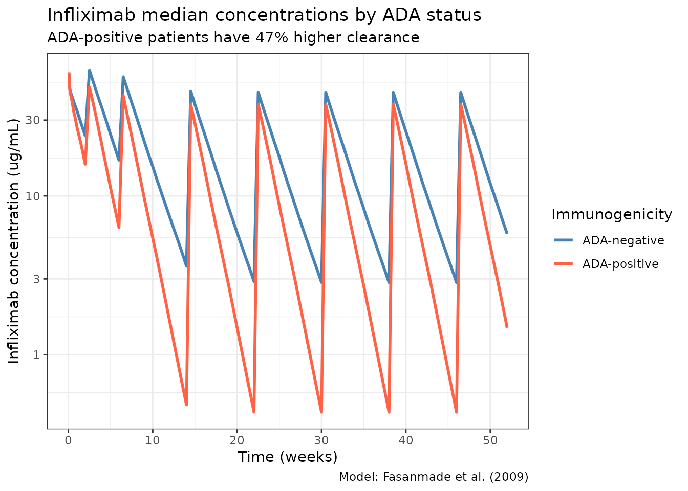

Fasanmade_2009_infliximab
Source:vignettes/articles/Fasanmade_2009_infliximab.Rmd
Fasanmade_2009_infliximab.Rmd
library(nlmixr2lib)
library(rxode2)
#> rxode2 5.0.2 using 2 threads (see ?getRxThreads)
#> no cache: create with `rxCreateCache()`
library(dplyr)
#>
#> Attaching package: 'dplyr'
#> The following objects are masked from 'package:stats':
#>
#> filter, lag
#> The following objects are masked from 'package:base':
#>
#> intersect, setdiff, setequal, union
library(tidyr)
library(ggplot2)
library(PKNCA)
#>
#> Attaching package: 'PKNCA'
#> The following object is masked from 'package:stats':
#>
#> filterInfliximab population PK simulation
Simulate infliximab concentration-time profiles using the final population PK model from Fasanmade et al. (2009) in patients with ulcerative colitis from the ACT 1 and ACT 2 phase III trials (N = 482).
The model is a 2-compartment IV infusion model with linear elimination. Covariates in the final model are serum albumin, anti-drug antibody (ATI / ADA) status, and sex on clearance, and body weight and sex on central volume. Concomitant immunomodulators (azathioprine, 6-mercaptopurine) were evaluated but did not have a statistically significant effect on CL.
Source trace
| Element | Source location | Value / form |
|---|---|---|
| CL, Vc, Vp, Q | Fasanmade 2009 Table 3 | 0.407 L/day, 3.29 L, 4.13 L, 7.14 L/day |
| ALB on CL | Fasanmade 2009 Table 3 | Power: (ALB/4.1)^-1.54 |
| ADA on CL | Fasanmade 2009 Table 3 | Multiplicative: 1 + 0.471 * ADA_POS |
| SEX on CL | Fasanmade 2009 Table 3 | Multiplicative: 1 + (-0.236) * SEXF |
| WT on Vc | Fasanmade 2009 Table 3 | Power: (WT/77)^0.538 |
| SEX on Vc | Fasanmade 2009 Table 3 | Multiplicative: 1 + (-0.137) * SEXF |
| IIV CL, Vc | Fasanmade 2009 Table 3 | omega^2 = 0.131 (37.7% CV), 0.048 (22.1% CV) |
| Residual error | Fasanmade 2009 Table 3 | Proportional 0.403, additive 0.0413 ug/mL |
| Dosing regimen | Fasanmade 2009 Methods | 5 mg/kg IV at weeks 0, 2, 6, then q8w |
Covariate column naming
| Source column | Canonical column used here |
|---|---|
ATI (antibodies to infliximab) |
ADA_POS (per
.claude/skills/extract-literature-model/references/covariate-columns.md) |
SEX (1 = female, 0 = male) |
SEXF (same 0/1 encoding, canonical name) |
Virtual population
set.seed(2009)
n_subj <- 500
pop <- data.frame(
ID = seq_len(n_subj),
WT = rlnorm(n_subj, log(77), 0.22), # Median 77 kg, range ~40-177
ALB = rnorm(n_subj, 4.1, 0.4), # Mean 4.1, SD 0.4 g/dL
SEXF = rbinom(n_subj, 1, 0.392), # 39.2% female
ADA_POS = rbinom(n_subj, 1, 0.068) # 6.8% ADA-positive
)
pop$ALB <- pmax(2.0, pmin(pop$ALB, 5.5))Dosing dataset
Standard UC induction: 5 mg/kg IV at weeks 0, 2, and 6, then maintenance every 8 weeks through week 46 (8 doses total). Infusion over 2 hours.
dose_weeks <- c(0, 2, 6, 14, 22, 30, 38, 46)
dose_times <- dose_weeks * 7 # convert to days
obs_times <- sort(unique(c(
seq(0, 7, by = 0.5), # Dense first week
seq(7, 364, by = 3.5) # Twice weekly thereafter
)))
d_dose <- pop %>%
crossing(TIME = dose_times) %>%
mutate(
AMT = round(5 * WT, 1), # 5 mg/kg
EVID = 1,
CMT = 1,
DUR = 2 / 24, # 2-hour infusion in days
DV = NA_real_
)
d_obs <- pop %>%
crossing(TIME = obs_times) %>%
mutate(AMT = NA_real_, EVID = 0, CMT = 1, DUR = NA_real_, DV = NA_real_)
d_sim <- bind_rows(d_dose, d_obs) %>%
arrange(ID, TIME, desc(EVID)) %>%
as.data.frame()Simulate
mod <- readModelDb("Fasanmade_2009_infliximab")
sim <- rxSolve(mod, d_sim, returnType = "data.frame")
#> ℹ parameter labels from comments will be replaced by 'label()'Concentration-time profiles
sim_summary <- sim %>%
filter(time > 0) %>%
group_by(time) %>%
summarise(
median = median(Cc, na.rm = TRUE),
lo = quantile(Cc, 0.05, na.rm = TRUE),
hi = quantile(Cc, 0.95, na.rm = TRUE),
.groups = "drop"
)
ggplot(sim_summary, aes(x = time / 7)) +
geom_ribbon(aes(ymin = lo, ymax = hi), alpha = 0.2, fill = "darkred") +
geom_line(aes(y = median), color = "darkred", linewidth = 1) +
scale_y_log10() +
labs(
x = "Time (weeks)",
y = "Infliximab concentration (ug/mL)",
title = "Simulated infliximab PK (5 mg/kg IV, induction + q8w maintenance)",
subtitle = "Median and 90% prediction interval (N = 500 virtual UC patients)",
caption = "Model: Fasanmade et al. (2009) Eur J Clin Pharmacol"
) +
theme_bw()
Effect of anti-drug antibodies on PK
sim_ada <- sim %>%
filter(time > 0) %>%
mutate(ADA_label = ifelse(ADA_POS == 1, "ADA-positive", "ADA-negative")) %>%
group_by(time, ADA_label) %>%
summarise(
median = median(Cc, na.rm = TRUE),
.groups = "drop"
)
ggplot(sim_ada, aes(x = time / 7, y = median, color = ADA_label)) +
geom_line(linewidth = 1) +
scale_y_log10() +
scale_color_manual(values = c("ADA-negative" = "steelblue", "ADA-positive" = "tomato")) +
labs(
x = "Time (weeks)",
y = "Infliximab concentration (ug/mL)",
title = "Infliximab median concentrations by ADA status",
subtitle = "ADA-positive patients have 47% higher clearance",
color = "Immunogenicity",
caption = "Model: Fasanmade et al. (2009)"
) +
theme_bw()
NCA validation
Run PKNCA on the maintenance dosing interval (after the 5th dose, weeks 22–30). Stratify by ADA status so each treatment group has its own NCA summary, as required by the skill’s PKNCA recipe.
nca_conc <- sim %>%
filter(time >= 154, time <= 210, Cc > 0) %>%
mutate(
time_rel = time - 154,
treatment = ifelse(ADA_POS == 1, "ADA-positive", "ADA-negative")
) %>%
rename(ID = id) %>%
select(ID, time_rel, Cc, treatment)
nca_dose <- pop %>%
mutate(
time_rel = 0,
AMT = 5 * WT,
treatment = ifelse(ADA_POS == 1, "ADA-positive", "ADA-negative")
) %>%
select(ID, time_rel, AMT, treatment)
conc_obj <- PKNCAconc(nca_conc, Cc ~ time_rel | treatment + ID)
dose_obj <- PKNCAdose(nca_dose, AMT ~ time_rel | treatment + ID)
data_obj <- PKNCAdata(
conc_obj,
dose_obj,
intervals = data.frame(
start = 0,
end = 56,
cmax = TRUE,
tmax = TRUE,
auclast = TRUE,
half.life = TRUE
)
)
nca_results <- pk.nca(data_obj)
#> ■■■■■■■■■■ 31% | ETA: 6s
#> ■■■■■■■■■■■■■■■■■■■■ 64% | ETA: 3s
#> ■■■■■■■■■■■■■■■■■■■■■■■■■■■■■■ 98% | ETA: 0s
nca_summary <- summary(nca_results)
knitr::kable(
nca_summary,
digits = 2,
caption = "NCA summary (maintenance interval, weeks 22-30), stratified by ADA status"
)| start | end | treatment | N | auclast | cmax | tmax | half.life |
|---|---|---|---|---|---|---|---|
| 0 | 56 | ADA-negative | 465 | 887 [58.6] | 45.2 [28.8] | 3.50 [3.50, 3.50] | 14.7 [6.11] |
| 0 | 56 | ADA-positive | 35 | 556 [62.7] | 38.3 [28.0] | 3.50 [3.50, 3.50] | 10.1 [5.10] |
Assumptions and deviations
Fasanmade 2009 does not publish individual PK or per-subject covariate values, so the virtual population above approximates the reported distributions rather than reproducing them:
- Weight: sampled log-normal around a 77 kg median with SD 0.22 on the log scale (≈ 40–177 kg), matching the reported range.
- Albumin: sampled normal around mean 4.1 g/dL, SD 0.4 g/dL, clipped to [2.0, 5.5] g/dL.
- Sex and ADA status: sampled independently at 39.2% female and 6.8% ADA-positive, respectively. In the pooled ACT 1 / ACT 2 data these are not fully independent, but the joint distribution is not reported.
- No correlation between WT and ALB is imposed; the paper does not report one.
- Dosing regimen uses the 5 mg/kg induction + q8w maintenance schedule. Fasanmade 2009 pooled this with a 10 mg/kg arm; the 5 mg/kg schedule is the approved label dose and the most relevant typical use.
- Race is not included because it was not retained as a covariate in the final model.
Notes
- Model: 2-compartment IV with linear elimination. No TMDD.
- Key covariates: Albumin (strongest, power -1.54 on CL), ADA status (+47.1% CL), and sex (-23.6% CL and -13.7% Vc for females).
- Body weight was only significant on Vc (exponent 0.538), NOT on CL (unlike most mAb models).
- Concomitant immunomodulators (AZA, 6-MP) did NOT affect PK in the final model.
Reference
- Fasanmade AA, Adedokun OJ, Blank M, Zhou H, Davis HM. Population pharmacokinetic analysis of infliximab in patients with ulcerative colitis. Eur J Clin Pharmacol. 2009;65(12):1211-1228. doi:10.1007/s00228-009-0718-4